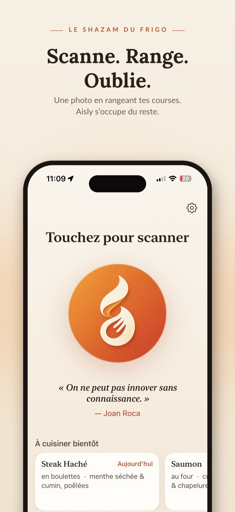
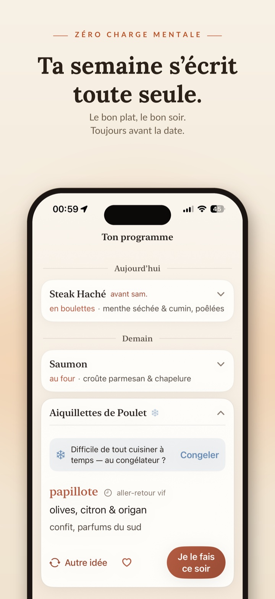
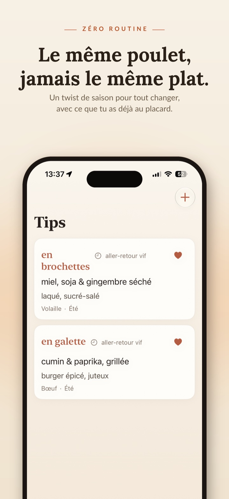
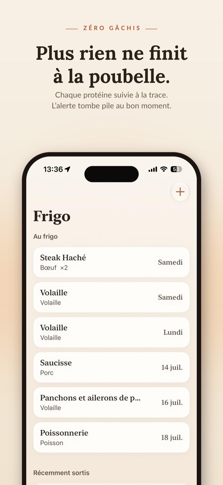

L'anti-gaspi qui inspire
Le Shazam
du frigo.
Une photo en rangeant tes courses. Aisly te réveille pile avant la date — avec une idée de saison, jamais deux fois pareil.
14 jours offerts · sans compte · 100 % privé


01
Oublie.
Aucun inventaire à tenir : l'app dort. Ta semaine s'écrit toute seule — le bon plat, le bon soir, toujours avant la date. Et quand ça se bouscule, Aisly suggère le congélateur. Jamais la poubelle.

02
Régale-toi.
À la place de « poulet, encore », une idée de saison réalisable maintenant, fond de placard uniquement. Quatre cents twists signés, jamais deux fois le même.

03
Range d'un geste.
Cuisiné, congelé — la protéine sort du suivi d'un tap. Tu ne gères jamais un stock : Aisly n'est pas un inventaire, c'est un allié.
« Faites simple. »
— Auguste Escoffier
Chaque jour, une citation de grand chef t'accueille dans l'app.
Local & privé, par construction.
Pas de compte
Aucune inscription, aucun e-mail. Tu télécharges, tu scannes.
Pas de cloud
Tes protéines, tes dates, tes habitudes : tout reste sur ton iPhone.
Pas de pistage
Zéro publicité, zéro analytics, zéro revente. C'est écrit, et c'est tenu.
Essaie d'abord
14 jours offerts.
Puis 2,99 € / mois ou 19,99 € / an — sans engagement, résiliable à tout moment.
Et Android ?
Tu es sur Android ?
Aisly arrive d'abord sur iPhone. Lève la main pour la version Android — on la construira si vous êtes assez nombreux.